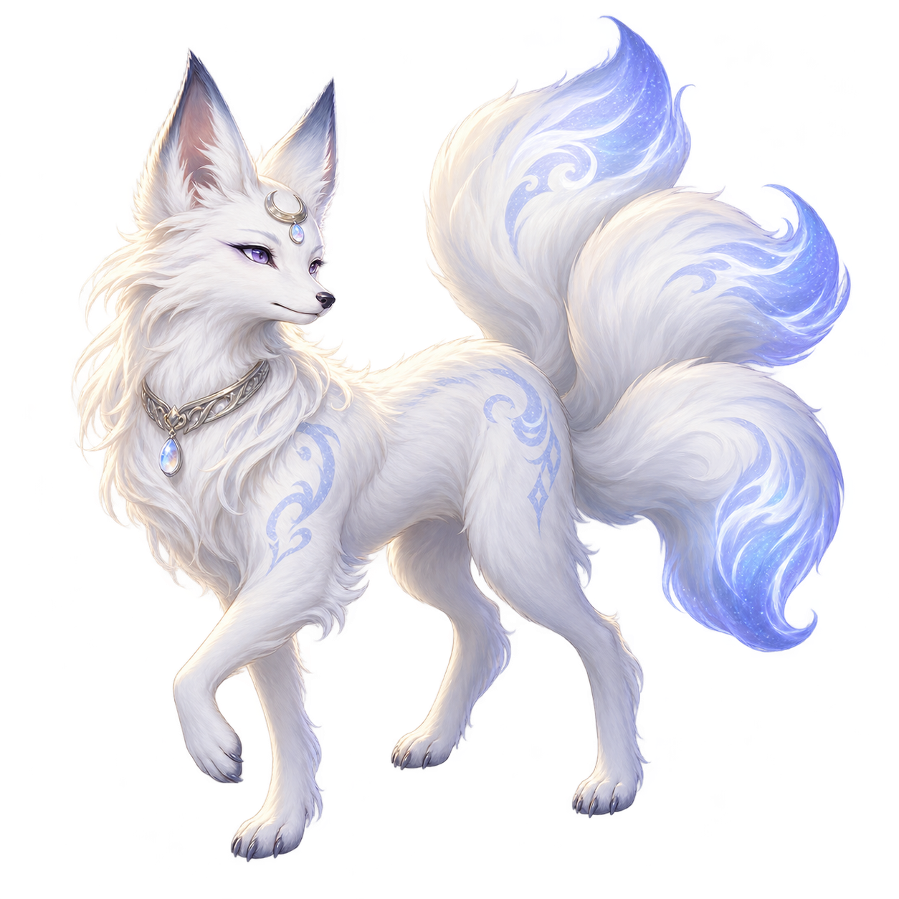
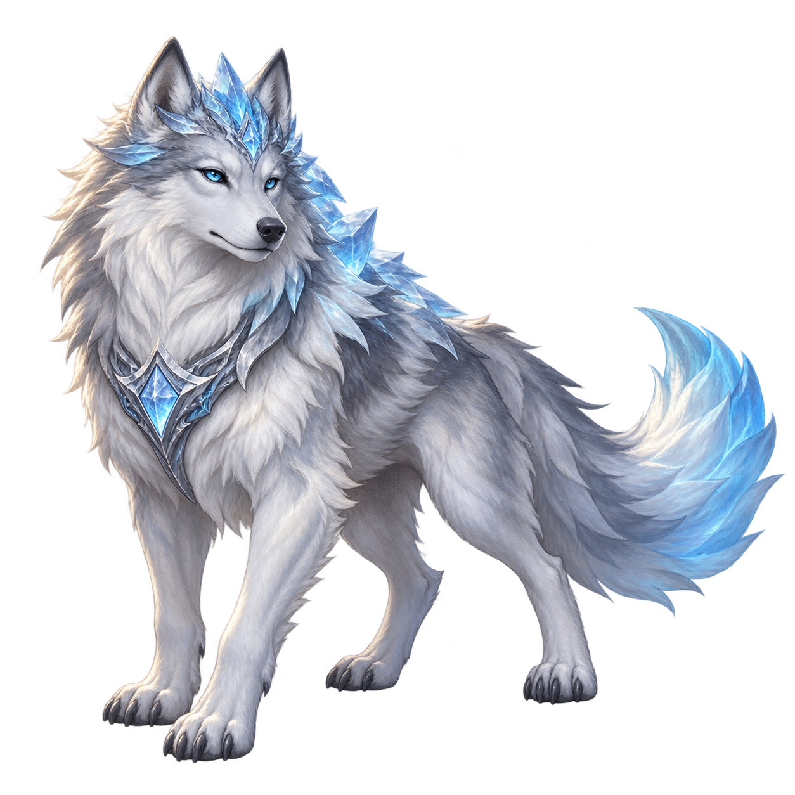
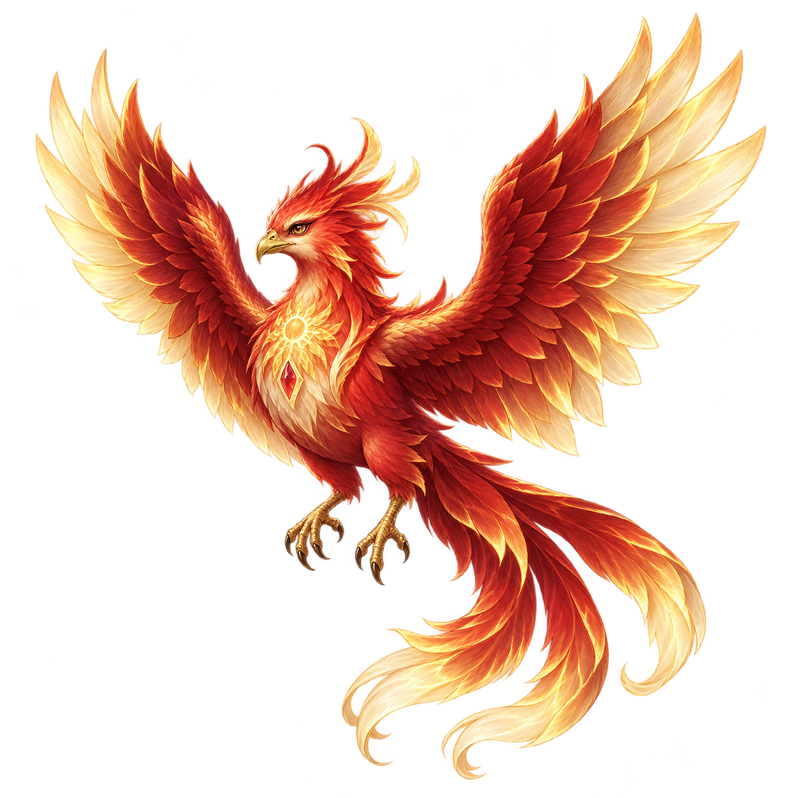
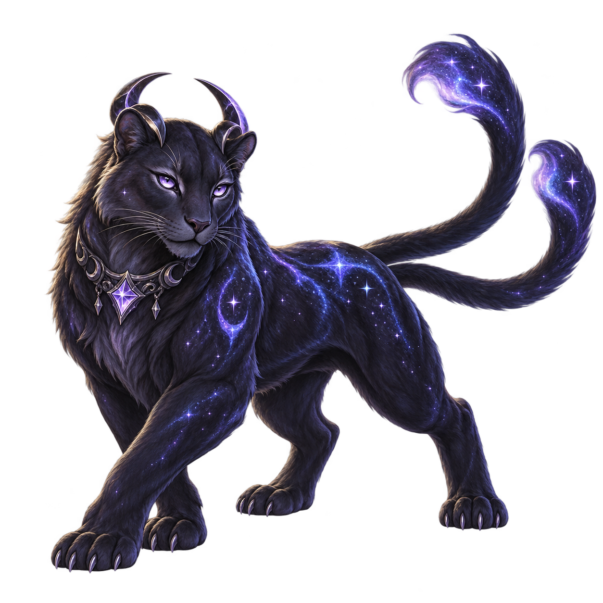

APPROVED 01 MOON SPIRIT월령 여우세 갈래의 달빛 꼬리와 백금 장식. 부드럽고 우아한 영물.PNG 원본 저장 1254 × 1254 · RGBA ↓
APPROVED 02 FROST GUARDIAN빙관 늑대빙정으로 이어지는 갈기와 은빛 모피. 단단한 수호수.PNG 원본 저장 1254 × 1254 · RGBA ↓
APPROVED 04 SOLAR PHOENIX태양 봉황홍금 깃털과 태양빛 날개. 길게 흐르는 꼬리의 봉황.PNG 원본 저장 1254 × 1254 · RGBA ↓
APPROVED 06 ASTRAL PANTHER성운 마수흑자색 털과 두 갈래 꼬리. 몸에 별빛을 품은 마수.PNG 원본 저장 1254 × 1254 · RGBA ↓